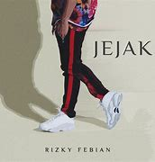

Lagu "I'm Not Ready For Another Love" dari Rizky Febian mengungkapkan perasaan seseorang yang belum siap untuk menjalin hubungan baru setelah mengalamai patah hati atau perpisahan. Secara keseluruhan, lagu ini berbicara tentang trauma emosional dan kesulitan untuk membuka hati kembali setelah kehilangan. Rizky Febian mengungkapkan perasaan kebingungannya, ketakutan akan cinta yang baru, dan kesadaran bahwa dirinya belum siap untuk melangkah ke hubungan yang baru meskipun ada kesempatan untuk itu
Lagu "Nona" dari Rizky Febian mengisahkan tentang perasaan seorang pria yang jatuh cinta kepada seorang wanita, namun ia merasa ragu dan bimbang dengan perasaan tersebut. Dalam lagu ini, Rizky Febian mencoba untuk menyampaikan perasaan cinta yang tulus, namun disertai dengan keraguan dan ketidakpastian mengenai bagaimana perasaan sang wanita terhadapnya.
Lagu "Reuni" ini menggambarkan perasaan haru dan bahagia saat bertemu kembali dengan seseorang yang sangat berarti setelah sekian lama berpisah. Ini bisa diartikan sebagai pertemuan dengan teman lama, mantan kekasih, atau bahkan anggota keluarga. Kesimpulan Secara garis besar, lagu "Reuni" ini adalah sebuah ungkapan perasaan tulus tentang pentingnya hubungan manusia dan kebahagiaan yang bisa didapatkan dari pertemuan kembali dengan orang-orang terkasih.
Lagu "Ragu" dari Rizky Febian adalah sebuah balada yang menceritakan tentang keraguan dalam sebuah hubungan. Sang penyanyi berusaha meyakinkan pasangannya yang merasa ragu akan perasaan cintanya.
lagu "Pergi Menjauh" adalah sebuah refleksi tentang kompleksitas hubungan manusia. Kadang, kita dihadapkan pada pilihan sulit antara mempertahankan sesuatu yang kita cintai atau melepaskannya demi kebaikan bersama.Intinya, lagu ini ingin menyampaikan pesan bahwa:Perpisahan adalah bagian dari hidup: Tidak semua hubungan bisa bertahan selamanya. Keraguan adalah hal yang wajar: Merasa ragu dalam sebuah hubungan adalah hal yang manusiawi. Menjaga jarak terkadang perlu: Kadang, menjaga jarak adalah cara terbaik untuk menemukan jawaban atas pertanyaan-pertanyaan yang kita miliki.
Lagu "Hanya Engkau" dari Rizky Febian dalam album "Jejak" memiliki makna yang sangat mendalam tentang kesetiaan dan cinta yang abadi. kesimpulannya, lagu "Hanya Engkau" adalah sebuah pernyataan cinta yang tulus dan abadi. Lagu ini mengingatkan kita tentang pentingnya kesetiaan dalam sebuah hubungan. Intinya, lagu ini ingin menyampaikan pesan bahwa: Cinta sejati itu ada: Setiap orang berhak mendapatkan cinta yang tulus dan abadi. Kesetiaan adalah kunci: Kesetiaan adalah fondasi yang kuat untuk membangun hubungan yang langgeng. Ungkapkan perasaanmu: Jangan ragu untuk mengungkapkan perasaan cinta kepada orang yang kamu sayangi.
Lagu "Keseriusan" dari Rizky Febian dalam album "Jejak" adalah sebuah balada yang menyuarakan perasaan kecewa dan sakit hati seseorang yang merasa tidak mendapatkan keseriusan dari pasangannya. lagu "Keseriusan" adalah sebuah refleksi tentang kekecewaan dalam cinta. Lagu ini mengingatkan kita bahwa tidak semua hubungan berjalan sesuai harapan. Intinya, lagu ini ingin menyampaikan pesan bahwa: Kejujuran itu penting: Jika tidak serius, lebih baik jujur dari pada memberikan harapan palsu. Hargai perasaan orang lain: Jangan menyakiti hati orang yang tulus mencintaimu. Jangan takut untuk move on: Jika sebuah hubungan tidak memberikan kebahagiaan, jangan ragu untuk melepaskannya.
Lagu Menari dari album Jejak Rizky Febian mengisahkan tentang perasaan seseorang yang sedang jatuh cinta, namun diliputi kebingungannya. Meskipun ia merasa terluka dan ada keraguan dalam hubungan tersebut, ia tetap berusaha "menari" atau melanjutkan hidup dengan semangat, meski penuh rasa bimbang. Lagu ini menyampaikan pesan tentang ketulusan perasaan yang tetap berusaha bertahan meski ada ketidakpastian dalam sebuah hubungan.
Lagu Bahasa Cinta dari album Jejak Rizky Febian berbicara tentang pentingnya komunikasi dalam hubungan, khususnya dalam hal mengungkapkan perasaan cinta. Lagu ini menggambarkan bagaimana seseorang ingin menyampaikan cintanya dengan cara yang tulus, namun merasa kesulitan karena kata-kata tidak selalu cukup untuk mengungkapkan perasaan terdalam. Dalam lagu ini, Rizky menekankan bahwa terkadang, bahasa cinta yang sebenarnya lebih kuat dari kata-kata adalah melalui tindakan dan perasaan yang dapat dirasakan bersama.